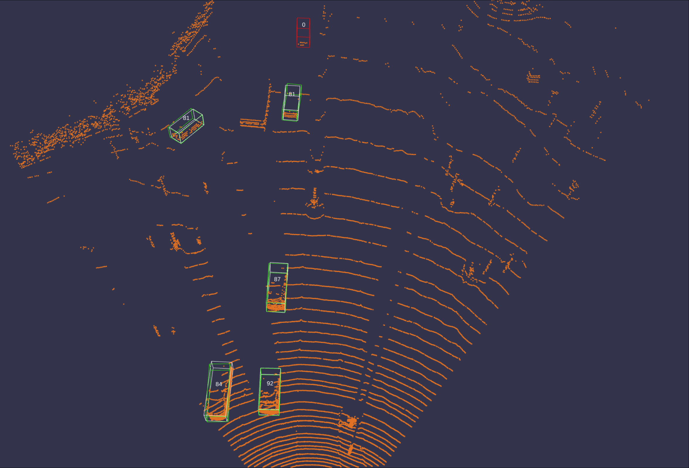

Rong Zou

I am a master student majored in Robotics, Systems and Control at ETH Zurich, tutored by Prof. Roland Siegwart. My research interests lie in the fields of robotics and computer vision, with a primary objective being the enhancement of robotic intelligence, particularly in the context of perceptual capabilities, to address complex real-world challenges.
I am currently working on my master’s thesis at Computer Vision and Geometry Group (CVG) led by Prof. Marc Pollefeys, on the topic of retrieval robust to motion blur. Previously, I conducted research on event-based vision at Robotics and Perception Group (RPG) led by Prof. Davide Scaramuzza.
I received my bachelor’s degree in Naval Architecture and Ocean Engineering from Huazhong University of Science and Technology (HUST).
News
| Jan 15, 2016 | A simple inline announcement with Markdown emoji! |
|---|---|
| Nov 7, 2015 | A long announcement with details |
| Oct 22, 2015 | A simple inline announcement. |
Publications
 |
arXiv
A data-driven approach to reconstruct the background from a single viewpoint in the presence of dynamic occlusions. |
Projects
 |
An approach to enhance the performance of existing supervised MDE methods by generating a substantial number of virtual views as additional supervision signals, circumventing the laborious and time-consuming process of collecting extra data. |
 |
A complete visual odometry (VO) pipeline. Local (sliding-window bundle adjustment) and global (loop detection & correction) optimization were also implemented, which alleviates the scale drift and transforms the pipeline into a VSLAM framework. |
|  |
A comprehensive study of the impact of canonical transformations and training data augmentation via geometric transformations on an existing two-stage 3D object detection method for detecting cars in LiDAR data. |